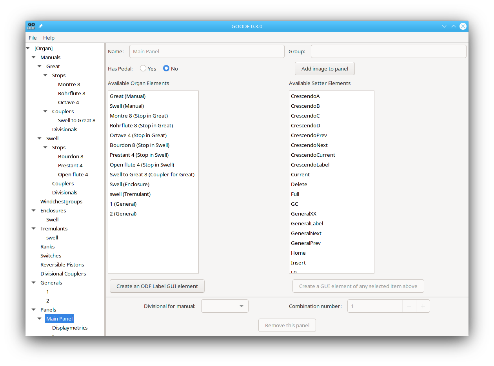
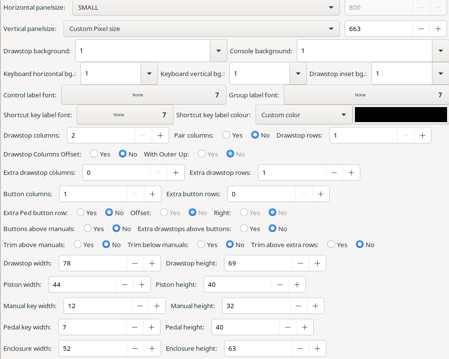
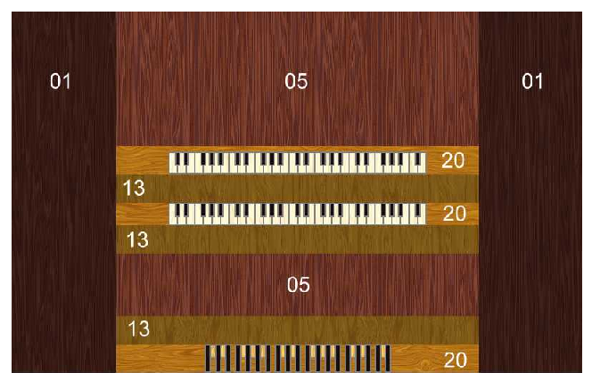

A Panel is a resize-able floating window in GrandOrgue. The main panel is required and normally has , at a minimum, the keyboards, stops, couplers, and expression elements. The entry window in GOODF lets you select the objects for which GUI elements will be created

Lists of available objects appear here, ones you’ve created on the left, and built in objects on the right. You can select one or more from each list, then Click the ‘Create a GUI element of any selected item above’ button. It is important to remember that manuals will be added from the bottom up in the order in which you create their GUI elements.
It is also possible to add on ore more Label GUI element(s) by clicking that button. Labels are further defined by editing them directly. See Labels
Images can be placed as well by clicking the ‘Add image to panel’ button. In this case a new editing window appears immediately, but you can also edit the images directly. See Images.
The Display Metrics window is used to define the graphical characteristics of the panel. It includes the ability to set fonts, panel size, element locations and sizes, an background patterns and colors.

The layout of any panel is described by a layout model. The available space is split vertically into three columns: The left and the right column contain drawstops laid out via a mesh. The middle row is vertically divided:

At the bottom, the pedal and its buttons are placed (if present). Above, an extra row of buttons may follow. The next row contains the enclosures. Then all manuals with their associated buttons follow. The two rows are a block of buttons and pistons. The exact order can be specified via an attribute.
Booleans are indicated by radio buttons. Strings and build in graphic elements use pulldown menus.
The Following Parameters are used
Horizontal panelsize (panel size, required) Height of the panel. Pixels can be entered directly by selecting Custom Pixel Size
Vertical panelsize (panel size, required) Width of the panel. Pixels can be entered directly by selecting Custom Pixel Size
Drawstop Background (bitmap number, required) shown as 01 in the above image.
Console Background (bitmap number, required) shown as 05 in the above image.
Keyboard Horiz Bg (bitmap number, required) shown as 13 in the above image
Keyboard Vert Bg (bitmap number, required) shown as 20 in the above image
Drawstop Inset Bg (bitmap number, required) Not shown in the picture, but this region surrounds the Drawstop rows and columns.
Control Label Font (string, required) Name of the font for drawstop and Combination button labels. Can be over-ridden for individual elements later.
Shortcut KeyLabel Font (string, required) Name of the font for keyboard labels
Shortcut Key Label Colour (color, required) Color for shortcut labels
Group Label Font (string, required) font name for labels
Drawstop Columns (integer 2-12, required) number of drawstop columns. Must be even. NOTE: If you want more than 12 drawstop columns, you must use absolute positioning.
Drawstop Rows (integer 1-20, required) Number of drawstop rows. NOTE: If you want more than 20 drawstop rows you must use absolute positioning.
Drawstop Columns Offset (Boolean, required) If true, each second row of drawstops on the left/right is vertically shifted.
With Outer Up (Boolean, required if DrawstopColsOffset is true) Determines if second row is shifted up or down.
Pair Columns (Boolean, required) group two drawstop rows together. Number of drawstop rows must be divisible by 4.
Extra Drawstop Rows (integer 0-99, required) number of drawstop rows in the center block. The row numbers start with 100.
Extra Drawstop Columns (integer 0 - 40, required) number of drawstop cols in the center block
Button Columns (integer 1-32, required) Number of columns for laying pistons in the center block
Extra Button Rows (integer 0-99, required) number of rows for laying extra pistons in the center block. The row numbers start with 100.
Extra Ped Button Row (Boolean, required) lay an extra piston row with row number 9.
(Extra Pedal button row) Offset (Boolean, required if ExtraPedalButtonRow is true) move extra pistons row slightly to the left.
(ExtraPedalButtonRow) Right (Boolean, required if ExtraPedalButtonRow is true) move extra pistons row slightly to the right.
Buttons Above Manuals (Boolean, required) lay the pistons associated with the manual above (true) or below (false) the manual.
Trim Above Manuals (Boolean, required) put trim (13) above manuals
Trim Below Manuals (Boolean, required) put trim (13) above manuals
Trim Above Extra Rows (Boolean, required) put trim (13) above extra button and drawstop rows
Extra Drawstops Above Buttons (Boolean, required) lay extra drawstop block above or below the extra piston block.
Drawstop Width (integer 1-150, default: 78) Drawstop width used for layout calculation
Drawstop Height (integer 1-150, default: 69) Drawstop height used for layout calculation
Piston Width (integer 1-150, default: 44) Piston width used for layout calculation
Piston Height (integer 1-150, default: 40) Piston height used for layout calculation
Enclosure Width (integer 1-150, default: 52) Enclosure width used for layout calculation
Enclosure Height(integer 1-150, default: 63) Enclosure height used for layout calculation
Pedal Height (integer 1-500, default: 40) Pedal height used for layout calculation
Pedal Key Width (integer 1-500, default: 7) Width of one pedal key used for layout calculation
Manual Height (integer 1-500, default: 32) Manual height used for layout calculation
Manual Key Width (integer 1-500, default: 12) Width of one manual key used for layout calculation